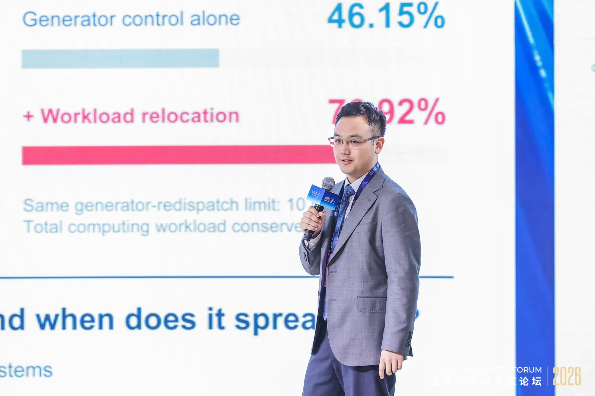
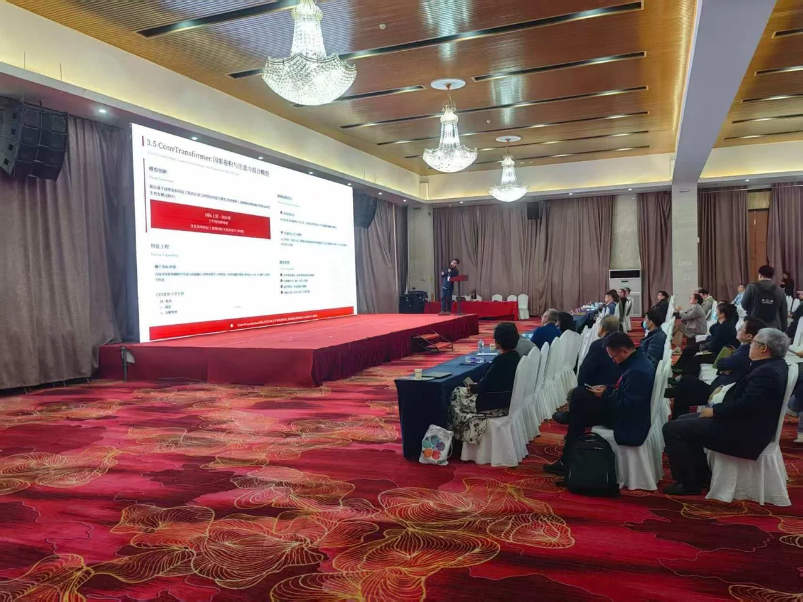
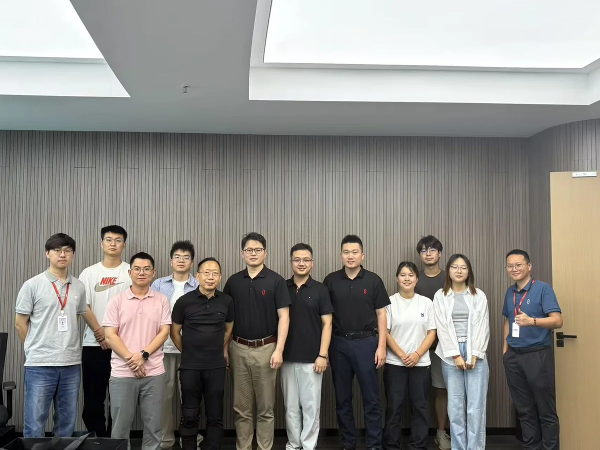

I am a postdoctoral researcher at Zhejiang University. During my Ph.D. in electrical engineering at Shanghai Jiao Tong University, I studied how power grids could respond to disruptions. I now work on modeling and optimal control across energy, manufacturing and healthcare.
I have led or contributed to more than ten research projects with combined funding of over RMB 10 million. These include projects under China’s National Key R&D Program and one each in the major, key and general AI project categories. In 2025, our work with Dongyangguang in Yichang on precision control in biomanufacturing was one of 16 cases selected for China’s first national list of AI applications in this field. Official list (case 13)
I have published 15 papers in SCI and EI journals. One was listed as an ESI Highly Cited Paper in 2026, and two received best paper awards at IEEE conferences. I am a named inventor on 10 granted invention patents and 14 additional published patent applications. Awards and honors
Research interests
I want to understand when a foundation model trained on past observations can guide decisions in a new setting. My approach is to use the model to estimate what may happen next, then use optimal control to compare actions under the physical or clinical constraints of each problem.
Power systems
When extreme weather changes both renewable generation and demand, can a time-series foundation model flag an impending supply shortfall? I plan to use those forecasts to study when to dispatch storage or shift data-center workloads while respecting grid operating limits.
Biomanufacturing
On the fermentation lines at Dongyangguang, batches run under similar conditions can follow different trajectories. I want to test whether a model trained across batches can detect that divergence early, and whether a control strategy chosen from its forecasts still performs reliably on later batches.
With colleagues at Zhejiang Cancer Hospital, I am interested in how the tumor–immune microenvironment changes during lung cancer treatment. I want to test whether multimodal models can distinguish those changes from differences between patients, then use simulations to compare the timing of chemotherapy and immunotherapy under dose and interval constraints.
Image credits
Transmission lines. Photograph by Rondol (2010), public domain. Cropped for this page. Source
Fermentation vessels. Detail from a photograph taken during my visit to the Dongyangguang production line.
Lung cancer CT. Public example by Jmarchn (2024), resized and padded for display. Source · CC0 1.0
L. Wang, C. Jiang, K. Gong, R. Si, H. Shao, W. Liu
IET Generation, Transmission & Distribution · Corresponding author
Talks & collaborations
Conference talks

World Laureates Forum · Young Scientists Conference
Computing × Energy: Shared Resilience
Research talk · Shanghai · 30 October 2026
How can data centers help the grid during a disruption? In simulations, shifting computing workloads between sites let the grid withstand more combinations of faults under the same limit on generator adjustments.
How shifting computing workloads changed resilience in the NPCC grid simulation.

BIOTEC-CHINA 2026
Applications of Large AI Models and Optimal Control in Biopharmaceutical Intelligent Manufacturing, Drug Development, and Optimal Cancer Therapy
Lab presentation · Beijing · April 2026
Prof. Xinggao Liu’s group at Zhejiang University presented work on industrial fermentation forecasting and mathematical models of cancer treatment schedules.
The TACOS modeling framework for studying cancer treatment schedules.
Industry collaborations
Dongyangguang Biochemical
Forecasting industrial fermentation
July 2024 – June 2027
I coordinate research and student development on forecasting key indicators in erythromycin production. The project uses plant data to study how those indicators change from batch to batch.

SERES Group
Research exchange with SERES
I coordinated discussions between our research group and SERES, an electric vehicle manufacturer.